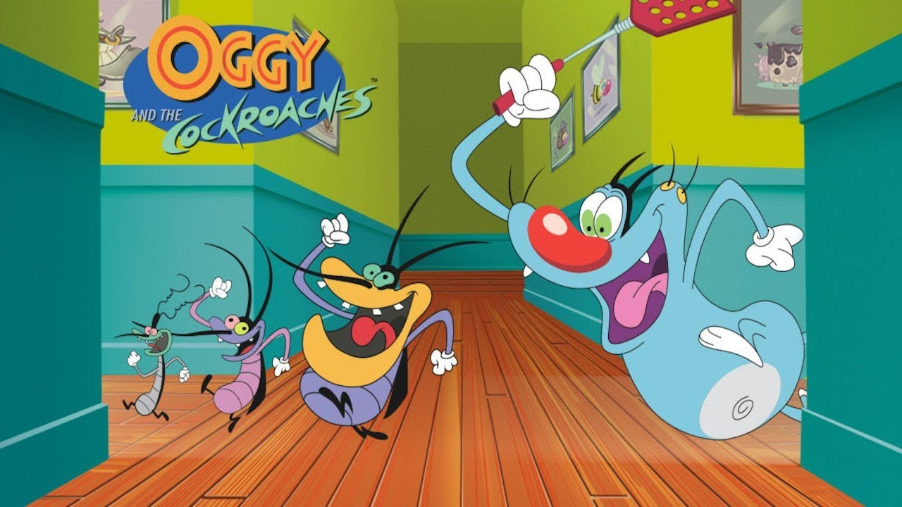

Tom and Jerry is an American animated franchise and series of comedy short films created in 1940 by William Hanna and Joseph Barbera. Best known for its 161 theatrical short films by Metro-Goldwyn-Mayer, the series centers on the rivalry between the titular characters of a cat named Tom and a mouse named Jerry.
| Serial Number | Title | Total # episodes | Broadcast run | Production Company | Original Channel | Total # seasons |
|---|---|---|---|---|---|---|
| 01 | The Tom and Jerry Show(1975) | 16 | 1975 | Hanna-Barbera | ABC | 01 |
| 02 | The Tom and Jerry Comedy Show | 15 | 1980-82 | Filmation | CBS | |
| 03 | Tom & Jerry Kids | 65 | 1990-93 | Hanna-Barbera | Fox | 04 |
| 04 | Tom and Jerry Tales | 26 | 2006-08 | Warner Bros. Animation | The CW | 02 |
| 05 | The Tom and Jerry Show(2014) | 104 | 2014-present | Warner Bros. Animation Renegade Animation | Cartoon Network(2014-16) Boomerang SVOD(2017-present |
03 |
| Total | 226 | 1975-present | - | |||
Laborum adipisicing culpa occaecat consectetur enim sint ut cillum nostrud excepteur deserunt. Cupidatat officia reprehenderit magna laboris nulla cupidatat minim qui nostrud sit consequat laborum excepteur. Amet deserunt tempor nulla pariatur. Ad occaecat in labore minim. Officia sit nisi irure ut excepteur mollit cillum amet aute. Ut ullamco pariatur cupidatat adipisicing velit. Aliquip amet consectetur irure incididunt anim irure exercitation nulla exercitation elit quis sint culpa ex.
